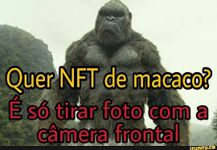

Meu nome é Raul Elias Barbosa Rodrigues. Tenho 16 anos. Escolhi o curso de Técnico em Desenvolvimento de Sistemas, pois é uma área que sempre despertou grande interesse em mim. Já havia feito um curso sobre programação de jogos e, por conta disso, desenvolvi interesse na área.
1
Primeiro, começamos o ano fazendo apresentações, tanto sobre nós mesmos quanto sobre trabalhos, aprendendo a nos organizar, dicas para apresentações, fluxogramas e algumas coisas sobre como é feito o trabalho na área de T.I. Logo após, começamos a usar o Prompt de Comando (cmd) para aprender algumas coisas básicas sobre o assunto, junto com o Python, onde aprendemos algumas coisas básicas no início, como variáveis, constantes, entrada e conversão de dados, e muitas outras coisas. Após isso, começamos a usar o Figma para fazer o protótipo de nossos sites, surgindo também nosso maior pesadelo, a DogDodoi 🤡.
2
Junto com o Figma, também aprendemos um pouco sobre arquitetura de redes, e depois disso, usamos a plataforma Tinkercad para criarmos um semáforo inteligente utilizando a linguagem C++. Depois de um bom tempo nessas atividades, finalmente saímos delas e passamos para a parte de Hardware, onde abrimos uma CPU e vimos cada peça que a compõe. Passando para a parte "importante", nos aprofundando em Python e começando a aprender HTML e CSS, melhorando nossas habilidades cada vez mais com o passar do tempo, contando também com a ajuda de outras plataformas, como PyCharm, GitHub e outros meios. E tudo isso, utilizamos até hoje, e vamos continuar a utilizá-las por um bom tempo.
Mesmo passando apenas 6 meses, tivemos muitos momentos impactantes, e vou listar alguns abaixo:
Foi um momento marcante, pois foi onde tudo começou, onde pude perceber que iria aprender muitas coisas novas.
A parte de Hardware foi uma das mais marcantes, pois pude conhecer o interior de um computador e aprendi como muitas de suas peças funcionam.
Durante as aulas, em uma delas, tivemos que apresentar tudo o que fazemos no curso, para a escola Regina Valarini Vieira, onde fiquei responsável por explicar sobre IoT e mostrar o semáforo inteligente que fizemos.
Assim como houve momentos de aprendizado, também houve muitos momentos bons, onde pude aproveitar com minhas amizades.
Vendo tudo o que aprendi, analisando oportunidades e considerando tudo o que posso aprender futuramente, me aprofundando mais no assunto, não tenho certeza se vou continuar na área de T.I., pois ainda tenho vontade de explorar outras áreas. No entanto, caso isso não aconteça, esta área será aquela que irei buscar.
